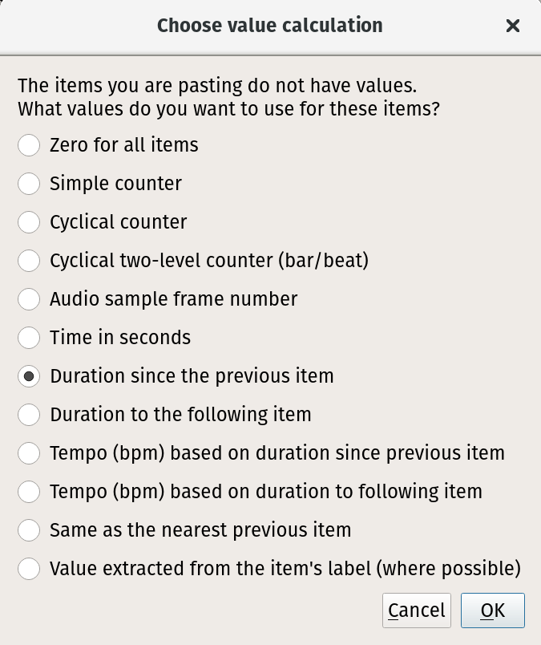
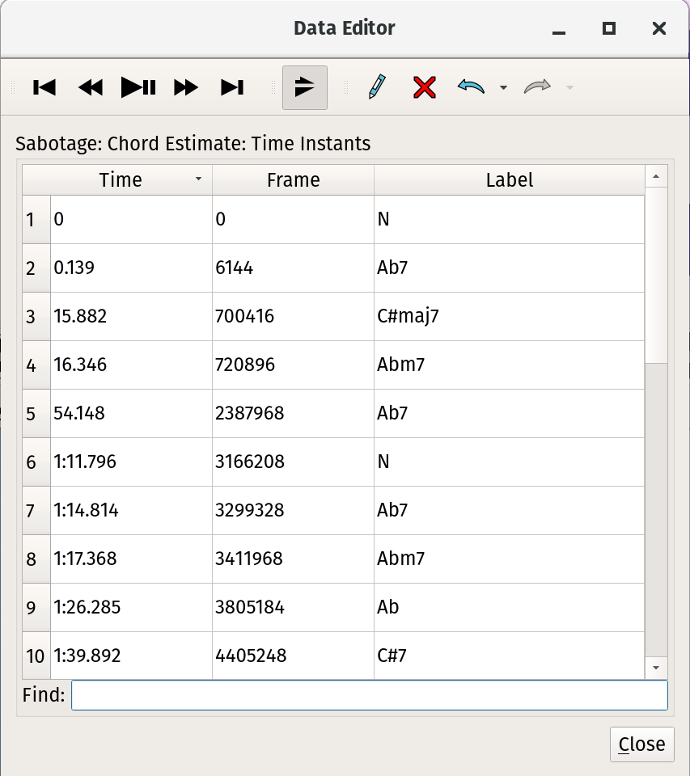
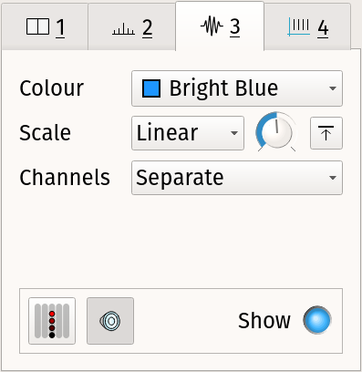
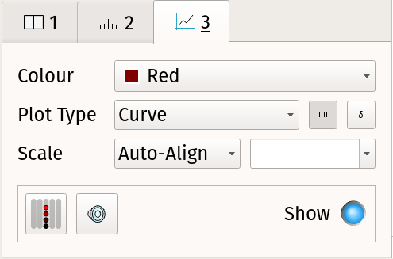
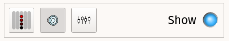

Sonic Visualiser
Sonic Visualiser is an application for viewing and analysing the contents of music audio files. This is a brief reference manual explaining the concepts used in Sonic Visualiser and how to use it. This manual describes Sonic Visualiser version 2.0.
This document is Copyright 2006-2011 Chris Cannam and Queen Mary, University of London. You may modify and redistribute it under the terms of the Creative Commons Attribution-ShareAlike 2.5 License. See http://creativecommons.org/licenses/by-sa/2.5/ for details.
Please report errors and omissions using the Sonic Visualiser bug tracker.
1 Panes and Layers
1.1 What are Panes and Layers?
Sonic Visualiser's user interface is structured around panes and layers. A pane is a horizontally scrollable area of window like a drawing canvas; a layer is one of a set of things that can be shown on a pane, such as a waveform, a line graph of measurements, or a subdivision of the horizontal axis into differently coloured segments.
You can stack any number of panes above one another vertically: a scrollbar will appear if you have too many to fit in the window. The horizontal axis of each pane corresponds to time in audio sample frames, and all of the stacked panes will be aligned to the same sample frame at their centre points.
Each pane can then display any number of layers, which are conceptually stacked on top of one another like layers in a graphics application. So for example, you may have a spectrogram layer "at the back", with line data, onset positions and notes displayed in separate layers "in front", i.e. drawn over the top of it. There are several different kinds of layer, which differ in the types of data they can represent: instants, curves (time-value plots), and so on.
A pane with four layers: waveform in black, time ruler in grey, time values in purple and time instants in blue.
Layers that are stacked on the same pane will always share the same magnification and alignment on the x (time) axis. However, they do not have to have identical scales on the y axis – although Sonic Visualiser will attempt to align them by default if their scale units match.
One pane is always the "active" pane, and this one is marked with a black vertical bar to its left. The front layer on that pane is the active layer. Any menu operation in Sonic Visualiser that works on a single layer will always operate on the active layer.
While most of the annotation layer types are interactively editable on the pane itself, layers corresponding directly to audio data (such as waveform and spectrogram layers) are not.
1.2 Adding Panes and Layers
Sonic Visualiser starts with a single visible pane. When you import an audio file, it adds time ruler and waveform layers to that pane, displaying the new audio file.
There are then three menus dedicated to adding new panes and layers to the display, with various kinds of data in them:
- The Pane menu contains several functions to add new panes
displaying audio data.
Use the Add Waveform and Add Spectrum functions to add a new pane containing a waveform or spectrum layer. Use one of the three Add Spectrogram functions to add a pane with a spectrogram layer with a particular set of initial properties. You can also add an empty pane and add layers to it afterwards. - The Layer menu contains the same functions as the Pane menu. When
invoked from the Layer menu, they add a new layer to the current pane
instead of adding a whole new pane.
The Layer menu also contains functions to add empty layers of each of the editable layer types: time instants, time values, notes, regions, text, and images.
You can also add an existing layer to another pane, thus displaying the same thing more than once, or add a slice of an existing colour 3D plot layer. - The Transform menu lists things you can do to your audio in order to produce new layers with data in them. Transforms include applying audio effects plugins to produce different audio data, and applying feature extraction plugins to extract other kinds of data from the audio. See Transforms and Plugins.
You can also add a new layer by importing an existing set of annotation data from a file.
1.3 Display Properties
Each layer, whether editable or not, has a set of adjustable display properties. These are shown in a corresponding stack to the right of the pane. To save space, not all of the names of the properties are shown; you can hold the mouse pointer over a control to see the name of its property in a tooltip.
Click on the numbered tab for a layer in this stack to "raise" that layer to the front of the pane and adjust its properties. The available properties for the different layer types are discussed in the sections about those layers, below.
There is also a tab corresponding to the pane itself, which can be used to control the way the pane tracks during playback and its alignment with other panes.
The Global Scroll and Global Zoom settings (both on by default) make the pane follow any horizontal scrolling and zooming that happens in other panes that also have these settings on, so that when you scroll or zoom in one of them, they all scroll or zoom.
The Follow Playback control allows you to choose whether the pane will track playback using a playback cursor, paging when it reaches the edge of the pane (Page); or whether it will scroll along with the playback (Scroll); or neither.
2 Sessions and Undo
A Sonic Visualiser "session" is a record of almost everything you see in front of you in the Sonic Visualiser window: the current layout of panes, the set of layers on each one, all of the data in each of the editable layers, a reference to the source data (for example the audio file) for non-editable layers like waveforms, the display properties for each layer, and some information about where each layer came from (for example, whether it was generated by a plugin and if so, which plugin and how it was configured.)
You can save the entire session to a .sv session file using File ->
Save Session As... Reloading this file should restore your session
state, provided that the original audio file can also be found. (If
you are passing session files to other Sonic Visualiser users, be sure to make sure
they have the audio data as well, as this is never stored in the
session file.)
Sonic Visualiser provides full multi-level Undo and Redo. Almost all actions that change the session you see in front of you – with the exception of scrolling and zooming – can be undone. This includes adding and removing layers and panes and changing the display properties for a layer, as well as more conventional edits.
3 Tools
Sonic Visualiser has six "tools", which control the way mouse actions interact with the panes. These can be activated using the tool icons on the toolbar:
 Navigate tool. Used for basic viewing and navigating. With
this tool active, you can just click and drag anywhere on a pane
to move the view of the audio data around. This tool is active by
default, except when a new empty editable layer has just been added, when the draw tool (below) is made active.
Navigate tool. Used for basic viewing and navigating. With
this tool active, you can just click and drag anywhere on a pane
to move the view of the audio data around. This tool is active by
default, except when a new empty editable layer has just been added, when the draw tool (below) is made active.
 Select tool. Used for selecting areas.
Click and drag in any pane to select a region in time. See also
Selection, below.
Select tool. Used for selecting areas.
Click and drag in any pane to select a region in time. See also
Selection, below.
 Edit tool. Used for moving items in editable layers.
Edit tool. Used for moving items in editable layers.
 Draw tool. Used for adding items to editable layers.
Draw tool. Used for adding items to editable layers.
 Erase tool. Used for removing items from editable layers.
Erase tool. Used for removing items from editable layers.
 Measure tool. Used
to make measurements of pixel regions, in terms of time and scale
values. See Measurements.
Measure tool. Used
to make measurements of pixel regions, in terms of time and scale
values. See Measurements.
4 Selection
With the select tool  active, click and drag
within any pane to select a region.
active, click and drag
within any pane to select a region.
The selection boundaries will snap to the resolution or features present on the active layer. For example, if you drag a selection on a spectrogram layer, the selection's boundaries will be aligned with the spectrogram's FFT window hops; if you drag a selection on a time-instants layer, its boundaries will snap to instants present on the layer; if you drag a selection on a waveform layer, its boundaries will simply snap to audio sample frames.
Pressing Shift as you start dragging a selection will defeat this snap effect, forcing the selection to snap to the nearest audio sample to each pixel boundary.
You can select more than one separate region at a time, by holding Ctrl as you start selecting the second and subsequent regions to add them to the existing selection.
You can also click-drag the left and right edges of a selection to change its extents after it has been made.
A selection within Sonic Visualiser conceptually consists of one or more regions in time. When you select a region in a layer, you are selecting a period of time across all layers; you are not selecting the visible items that happen to fall within that region in that one layer.
This has several consequences:
- If more than one item occurs at the same time in the same layer, there is no way to select only some of them.
- Even if items in a layer are above or below the visible range of the layer's vertical scale (i.e. off the top or bottom of the pane), they will still be selected if they fall within a selected time region.
- If you make a selection in one layer and then make a different layer active before carrying out an editing action that operates on the active layer, it will operate on the new active layer – not on the items in the layer you originally made the selection in.
An advantage of this is that it is very easy to select all the items in one layer that fall between certain items in another layer – make the second layer active, make a selection (which will snap to the item positions on that layer), then make the first layer active again.
5 Editing
Most of Sonic Visualiser's annotation layer types are interactively editable. Layers corresponding directly to audio data (such as waveform and spectrogram layers) are not editable. Sonic Visualiser is not an audio editor.
To move an individual item in a layer, make sure the
edit tool  is active and then click on and drag
the item. If the item is relatively wide on the screen, you may have
to click and drag its left hand edge for the drag to take effect.
is active and then click on and drag
the item. If the item is relatively wide on the screen, you may have
to click and drag its left hand edge for the drag to take effect.
When dragging an item, there is a certain amount of "resistance" when you first move the mouse before the item begins to move (to help avoid accidental edits). You can override this by holding down the Shift key when you start dragging, if you want to make a small correction.
You can also edit the details of an item directly, by double-clicking
on it with either the navigate  or edit
or edit  tool selected. (The advantage
of using the navigate tool is that it removes the risk of
accidentally editing the point while double-clicking on it.)
tool selected. (The advantage
of using the navigate tool is that it removes the risk of
accidentally editing the point while double-clicking on it.)
To move a set of items at once, select the region around them, then switch to the edit tool  and drag the selected
region.
and drag the selected
region.
To delete one or more items click on them with the erase  tool selected, or select the region around them and use Edit -> Delete Selected Items.
tool selected, or select the region around them and use Edit -> Delete Selected Items.
5.1 Cut and Paste
Sonic Visualiser allows you to cut and paste between layers of different types, preserving as much information as can be reconciled with the layer types.
To cut and paste between two layers, select the items in the source layer, use Edit -> Cut, select the target layer and Edit -> Paste. The items will be pasted at the same location in time as they were found in the source layer.
If the target layer is of a type that represents less information than the source – for example if you are pasting to a time instant layer from a time/value curve – then the relevant information (in this case time positions) will be retained, and the rest discarded.
If the target layer represents more information than the source, you will be offered various options for how to make up the values that are not present in the pasted items (as shown to the right).
If no suitable target layer is selected at all (for example, if the layer that is active when you ask to paste is not of an editable type), then a new layer of the most appropriate type will be created automatically and the values will be pasted into it.
5.2 The Data Editor
You can also view and edit data for a layer directly in the data editor window. If the current layer is an editable one, you can call up this window through the Edit Layer Data option on the Layer menu.
You can edit any of the values in this layer simply by double-clicking on a value and typing a new one. If you want to edit one of the real-time values in the first column, enter the new value in seconds. Undo applies to any edits made in this window.
By default, this window will scroll to keep time with playback.
You can toggle this behaviour using the  Track Playback button in the
toolbar.
Track Playback button in the
toolbar.
Although you can select items in the data editor window and delete them as well as inserting new ones, there is no connection between the selection in this window and any selection that is in place in the main window.
6 The Layers in Detail
6.1 Waveform
The waveform layer shows audio data in a traditional waveform peak display.
A waveform layer.
Each pixel on the horizontal axis shows the peak and mean positive and negative values found in samples falling within that pixel's range at the current zoom level. The zoom level can be increased or decreased in multiples of sqrt(2) using the mouse wheel or the Up and Down cursor keys.

The Y axis scale can be adjusted using the Scale display properties:
- Linear (the default): The scale displacement is proportional to the voltage level of the resulting audio output.
- dB: The scale displacement is proportional to the log of the absolute voltage.
- Meter: An intermediate scale is used that may be non-linear, intended to make peaks more apparent than the dB scale but quiet sections easier to see than the linear scale.
The Scale properties also provide a display gain control, and a "Normalize Visible Area" switch which will adjust the display gain continuously so as to ensure full scale displacement for the largest value in the visible section of the waveform.
The way the waveform layer handles multiple channels can be adjusted using the Channels display property:
- Separate (the default): Multiple channels will be shown on separate axes, stacked above one another.
- Mean: A single synthetic channel will be shown, whose peaks are the mean of the peaks of the actual underlying channels.
- Butterfly: For stereo audio, a single synthetic channel will be shown, with the "positive" peaks corresponding to the left (first) underlying channel and the "negative" peaks corresponding to the right (second) channel.
6.2 Time Ruler
The time ruler layer simply displays a series of labelled time divisions.
A time ruler layer. The centre line is not part of the layer, but is built in to the pane.
Each new pane has a time ruler layer in it by default, although you can remove or hide it. The time ruler layer is not editable.
6.3 Spectrogram
The spectrogram layer shows audio data in the frequency domain, with the Y axis corresponding to frequency and the power (or phase) of each frequency within a given time frame shown by the brightness or colour of the pixels corresponding to that frequency.
There are three types of spectrogram layer available in the Sonic Visualiser menus: "plain", Melodic Range, and Peak Frequency. These differ only in the initial properties the layer is set up with. You can always turn any kind of spectrogram into any other kind by adjusting its properties after it has been created.
A spectrogram layer.
The colour scheme used for the spectrogram can be adjusted using the Colour properties (Colour, Threshold, and Colour Rotation). The Colour option allows you to select different colour maps; while most of these are smooth gradients from one colour to another, there are also two colour maps (Banded and Highlight) that employ sudden transitions of colour. These can be useful with the Colour Rotation control to isolate areas with similar levels.
The type of values displayed, and the way the colour scale for the spectrogram is calculated can be adjusted using the Scale display properties:
- The Colour Scale property controls the mapping from the value in each frequency bin to the colour used to display that bin. The mappings (Linear, Meter and dBV) are equivalent to those available for the waveform layer scale, and there is also a dBV^2 scale which uses a mapping proportional to the log of the square of the bin value. The special setting Phase will set the spectrogram to show colours corresponding to the phase angle instead of power of each frequency bin.
- The Normalize Columns switch
 will cause the colours in all
bins to be adjusted so that the frequency bin with the highest value
in a given time frame receives the brightest available colour. This
will increase the overall brightness for quiet frames and may decrease
it for loud frames.
will cause the colours in all
bins to be adjusted so that the frequency bin with the highest value
in a given time frame receives the brightest available colour. This
will increase the overall brightness for quiet frames and may decrease
it for loud frames.
- The Normalize Visible Area switch
 will cause the colours
in all bins to be adjusted so that the frequency bin with the highest
value within the visible region of the spectrogram receives the
brightest available colour.
will cause the colours
in all bins to be adjusted so that the frequency bin with the highest
value within the visible region of the spectrogram receives the
brightest available colour.
- The Gain control applies a gain to the bin values before applying the display colour map.
The spectrogram itself is obtained from the results of a series of fast Fourier transforms of windowed sections of the original audio. The parameters of these transforms can be adjusted using the Window display properties:
- The size of the window can be adjusted using the Window Size property. This value is critical, as it directly controls the number of available frequency bins in the resulting spectrogram. Smaller values will give a finer resolution in time; larger values will give a finer resolution in frequency.
- The overlap between consecutive windows can be adjusted using the Window Overlap property, which determines by what proportion of the window size the processing frames will overlap. Using a larger overlap will help to compensate for the reduced time resolution of a large window size.
- The shape of the window applied to each section of audio data is not adjustable from the spectrogram properties, but can be adjusted globally in the application preferences. The available shaped windows are Hamming, Hann (also known as Hanning), Blackman, Blackman-Harris and Nuttall (cosine-based windows); Gaussian, Parzen, triangular and un-windowed (rectangular). The Hann window is the default and should be appropriate for most purposes.
The scale used for the Y axis of the spectrogram can be adjusted using the Bins properties.
- The Bin Display property controls the frequency bins that are actually shown and how they are drawn. If set to Peak Bins, only those bins containing higher values than both of their frequency neighbours in the same time frame will be drawn. If set to Frequencies, each peak's bin will be drawn with a single line at a position that corresponds to an estimate of the actual frequency present within the bin, rather than the theoretical frequency range of the bin. This instantaneous frequency estimate is arrived at by comparing the theoretical phase difference between consecutive time frames at the nominal bin frequency with the measured phase difference.
- The Frequency Scale property controls whether the Y axis is proportional to frequency, or proportional to the log of the frequency (and thus linearly proportional to musical pitch). In the latter case the spectrogram layer will use a stylised piano keyboard as its vertical scale, with the C in each octave shaded in grey.
 If you switch to the
If you switch to the  measure tool and move the mouse over
the spectrogram, it will show the "harmonic cursor" (see right). This
is a vertical line with tick marks at the frequencies of the second
harmonic, third harmonic and so on of the frequency that the mouse is
currently pointing at. These frequencies are simple multiples of the
fundamental, so they will be equally spaced if the frequency scale is
linear, or will get closer together as they go up if the frequency
scale is logarithmic. See Measurements
for other uses of the Measure tool.
measure tool and move the mouse over
the spectrogram, it will show the "harmonic cursor" (see right). This
is a vertical line with tick marks at the frequencies of the second
harmonic, third harmonic and so on of the frequency that the mouse is
currently pointing at. These frequencies are simple multiples of the
fundamental, so they will be equally spaced if the frequency scale is
linear, or will get closer together as they go up if the frequency
scale is logarithmic. See Measurements
for other uses of the Measure tool.
When selecting a region of time in a spectrogram layer, the selection will snap to the spectrogram's processing time frames. Hold the Shift key at the start of selection to defeat this.
6.3.1 Initial Spectrogram Properties
The Sonic Visualiser pane and layer menus contain options to add three kinds of spectrogram. These are all the same type of layer, but starting with different display properties.
Spectrogram
The plain spectrogram option creates a spectrogram that displays the full frequency range up to half of the audio file's sampling rate, with the vertical Frequency Scale set Linear, with Colour Scale set to dBV, and using the default, fairly gentle green-yellow-red colour scheme.
This is a general overview of the content of the file, in which background noise and overall equalisation trends may be fairly evident but individual musical features are not usually easy to make out.
Melodic Range Spectrogram
The melodic range spectrogram aims to make it easier to discern individual musically meaningful features.
It shows by default a frequency range from approx 40Hz to 1.5KHz, covering around 5.5 octaves that most usually contain melodic content. The FFT windows are fairly large for better frequency resolution, and heavily overlapped. The vertical Frequency Scale is logarithmic in frequency, and therefore linear in perceived musical pitch. The Colour Scale is Linear, making noise and lower-level content invisible but making it easier to pick out salient musical events, and a crisp colour scheme is used.
Peak Frequency Spectrogram
The peak frequency spectrogram is similar to the melodic range spectrogram, but it aims to make it possible to pick out precise frequency content in the material, within certain limitations.
Its Bin Display is set to Frequencies, so that it displays only those bins that are stronger then their neighbouring frequency bins, and for each bin it calculates an estimated frequency using phase unwrapping on the assumption that a stable frequency is present. This frequency is then displayed using a short horizontal line, rather than colouring the whole bin as a block. In good conditions this may produce a fairly accurate estimate of the actual frequency of an individual tone.
6.4 Spectrum
The spectrum layer shows a frequency analysis of the audio at a given point in time, like a vertical slice through a spectrogram layer.

A spectrum layer.
In contrast to almost all of the other layer types, the x axis of a spectrum layer does not measure time. Instead, the spectrum's x axis corresponds to frequency, with lower frequencies to the left and higher to the right. The spectrum animates appropriately to match the movement of time during playback and navigation, instead of scrolling. (In this respect it is closely related to the slice layer, which can display a similar slice through a colour 3D plot.)
The y axis of a spectrum plot shows the value of each frequency bin, corresponding to the colour scale of the spectrogram.
You can adjust the FFT window size and overlap using the Window properties, just as in the spectrogram; and you can select the y axis scale (linear or dB), gain and normalisation using the Scale properties.
The type of plot used to show the spectrum can be adjusted using the Plot Type property:
- Lines: The start points of the bins will be connected with straight lines.
- Steps: Each bin will be drawn with a single horizontal line showing the full width of the bin's frequency coverage.
- Blocks: Each bin will be drawn with an unfilled rectangular block.
- Colours: Each bin will be drawn with a coloured rectangular block whose colour is based on the same colour mapping scheme as used in the spectrogram.
If this option is selected, the Colour property may be used to select between the available colour maps, instead of showing single colours only.
If the Show Peak Frequencies property is set, a vertical line will be drawn through the estimated frequency of each spectral peak.
The horizontal extent of each bin depends on the Plot X Scale property, which selects the mapping between frequency and x coordinate for the plot.
If you switch to the  measure
tool and move the mouse over the spectrum, it will show a "harmonic
cursor" like that in the spectrogram. See Measurements for other uses of the Measure
tool.
measure
tool and move the mouse over the spectrum, it will show a "harmonic
cursor" like that in the spectrogram. See Measurements for other uses of the Measure
tool.
6.5 Time Instants
The time instants layer shows an editable sequence of points in time (instants), with each point displayed as a vertical bar across the full height of the layer. Each instant may have a label, which will be displayed near the top of the instant.
A time instants layer.
Instants can be added by clicking with the draw tool  , and edited by
dragging with the edit tool
, and edited by
dragging with the edit tool  . You can also
double-click on an instant with the edit or navigate tool
. You can also
double-click on an instant with the edit or navigate tool
 to open an edit dialog in which you can change
its label and finely adjust its timing.
to open an edit dialog in which you can change
its label and finely adjust its timing.
When selecting a region of time in a time instants layer, the selection will snap to the nearest instants on the layer (if any). Hold the Shift key at the start of selection to defeat this.
When a time instants layer is active, the fast-forward and rewind buttons can be used to jump the playback position to the nearest instant in either direction.
The Plot Type display property can be used to select between Instants display, in which each instant is shown with a single vertical bar, and Segmentation display, in which the regions between instants are coloured in alternating shades.
A time instants layer has a fundamental resolution, as a number of audio sample frames. Instants may only occur at multiples of this resolution, and are displayed using bars of a width corresponding to this resolution. The default resolution is 1 audio sample frame and this cannot currently be changed for any given layer, although layers generated by certain plugin transformations may have different resolutions.
6.6 Time Values
The time values layer shows an editable sequence of points in time, where each point has a value that determines its position on the Y axis. Each point may also have a label.
A time values layer, with curve plot type.
Points can be added by clicking with the draw tool  , and edited by
dragging with the edit tool
, and edited by
dragging with the edit tool  . You can also double-click on a point
with the edit or navigate tool
. You can also double-click on a point
with the edit or navigate tool  to open an edit dialog in which you can
change its label and finely adjust its timing and value.
to open an edit dialog in which you can
change its label and finely adjust its timing and value.
When selecting a region of time in a time values layer, the selection will snap to the nearest instants on the layer (if any). Hold the Shift key at the start of selection to defeat this.
When a time values layer is active, the fast-forward and rewind buttons can be used to jump the playback position to the nearest point in either direction.

The Plot Type display property can be used to adjust the display of points:
- Points: Each point will be displayed as a rectangle of width corresponding to the layer's time resolution. The points will not be connected.
- Stems: Each point will be displayed as a rectangle of width corresponding to the layer's time resolution. Each point will be connected to the zero value on the Y axis by a vertical line.
- Connected Points: Each point will be displayed as a rectangle of width corresponding to the layer's time resolution. Each point will be connected to the next with a straight line.
- Lines: The points themselves will not be drawn explicitly; instead a straight line segment will be drawn between the centres of consecutive points, resulting in a line graph.
- Curve: The centres of consecutive points will be used as the control points of a series of cubic splines, resulting in a smooth curve. Note that the curve will not pass through the actual point locations at local peak high and low values.
- Segmentation: The regions between the times of each pair of consecutive points will be shaded in a colour corresponding to the value of the point at the start of the region.
A time values layer may have a unit for the scale on the Y axis. If two layers with the same unit appear on the same pane, they will by default have vertical scales aligned with each other. This behaviour can be adjusted using the Vertical Scale display property.
If Vertical Scale is set to Linear or Log Scale, the scale will cover the range of values (or logs of values) present in the layer; if set to "+/-1", it will cover the range from -1 to +1 and points with values outside that range will be omitted.
If the Vertical Scale for a layer is set to anything other than Auto-Align, then any other layers in the same pane that have the same unit and that have Vertical Scale set to Auto-Align will align themselves to match it.
You can change the scale unit for a layer by selecting from, or editing the value in, the Scale Units property combo-box.
A time values layer has a fundamental resolution, as a number of audio sample frames. Points may only occur at times that are multiples of this resolution, and they may be displayed using boxes of a width corresponding to this resolution. The default resolution is 1 audio sample frame and this cannot currently be changed for any given layer, although layers generated by certain plugin transformations may have different resolutions.
6.7 Notes
The notes layer shows an editable sequence of notes, where each note has a start time, a duration, and a value that determines its position on the Y axis. Each note may also have a label.
A note layer.
Notes can be added by clicking and dragging with the draw tool  , and
edited by dragging with the edit tool
, and
edited by dragging with the edit tool  . You can also double-click on a
note with the edit or navigate tool
. You can also double-click on a
note with the edit or navigate tool  to open an edit dialog in which
you can change its label and finely adjust its timing and value.
to open an edit dialog in which
you can change its label and finely adjust its timing and value.
When selecting a region of time in a notes layer, the selection will snap to the start times of the nearest notes on the layer (if any). Hold the Shift key at the start of selection to defeat this.
A notes layer may have a unit for the scale on the Y axis. If two layers with the same unit appear on the same pane, they will by default have vertical scales aligned with each other. This behaviour can be adjusted using the Vertical Scale display property.

If Vertical Scale is set to Linear or Log Scale, the scale will cover the range of values (or logs of values) present in the layer; if set to "MIDI Note Range", it will cover the range from MIDI notes 0 to 127 and values outside that range will be omitted.
If the Vertical Scale for a layer is set to anything other than Auto-Align, then any other layers in the same pane that have the same unit and that have Vertical Scale set to Auto-Align will align themselves to match it.
You can change the scale unit for a layer by selecting from, or editing the value in, the Pitch Units property combo-box. However, if the scale unit is anything other than "Hz", the layer will assume that the values correspond to MIDI pitch and will convert them to Hz when calculating display and alignment.
A notes layer has a fundamental resolution, as a number of audio sample frames. Notes may only occur at times that are multiples of this resolution. The default resolution is 1 audio sample frame and this cannot currently be changed for any given layer, although layers generated by certain plugin transformations may have different resolutions.
6.8 Regions
The regions layer shows an editable sequence of regions spanning durations in time. Each region has a value, which by default determines its position on the Y axis, and a duration. A region may also have a label. A regions layer is used (for example) to display the result features returned by a plugin transform that associates a duration with each of its values.
Regions can be added by clicking with the draw tool  , and moved by
dragging with the edit tool
, and moved by
dragging with the edit tool  . You can also double-click on a region
with the edit or navigate tool
. You can also double-click on a region
with the edit or navigate tool  to open an edit dialog. (You may need
to click near the left edge of the region for an edit to take
effect.)
to open an edit dialog. (You may need
to click near the left edge of the region for an edit to take
effect.)
When selecting a region of time in a region layer, the selection will snap to the nearest region start. Hold the Shift key at the start of selection to defeat this.
6.9 Text
The text layer shows text annotation labels. Each label is fixed to a particular position in time, and appears at a particular height on the layer. The text layer is intended for informal or descriptive annotations that are not attached to other sorts of features (as the other editable layer types allow their points to have labels as well).
Labels can be added by clicking with the draw tool  , and moved by
dragging with the edit tool
, and moved by
dragging with the edit tool  . You can also double-click on a label
with the edit or navigate tool
. You can also double-click on a label
with the edit or navigate tool  to open an edit dialog. (You may need
to click at the top-left corner of the text label for an edit to take
effect.)
to open an edit dialog. (You may need
to click at the top-left corner of the text label for an edit to take
effect.)
When selecting a region of time in a text layer, the selection will snap to the nearest label on the layer (if any). Hold the Shift key at the start of selection to defeat this.
6.10 Images
The images layer shows images with optional labels. These images are drawn from image files at a disk or network location; only the image location is stored in the session, not the whole image, so you should be careful to make sure images are stored at an accessible location or transmitted with your session files as appropriate.
Images in a layer are fixed to a particular position in time under your control, but their Y coordinate on the pane is based entirely on their height and cannot be changed.
Images can be added by clicking with the draw tool  , and moved by dragging with the edit
tool
, and moved by dragging with the edit
tool  . You can also double-click on
an image with the edit or navigate tool
. You can also double-click on
an image with the edit or navigate tool  to open an edit dialog from which
you can set the label or change the image being displayed.
to open an edit dialog from which
you can set the label or change the image being displayed.
6.11 Colour 3D Plot
The colour 3D plot layer displays a three-dimensional data set in a grid.
A colour 3D plot layer.
It is used for data sets which have a discrete time axis, a set of bins at each time position, and a value in each bin. (In this respect it resembles the spectrogram, except that the spectrogram also knows about frequencies, window sizes and so on.) The grid x and y coordinates correspond to the time and bin respectively, and each grid square is coloured according to the value in the corresponding bin.
You can change the colour map used for the value scale using the Colour property; adjust whether the colour is mapped to a linear or logarithmic scale using the Scale property; and also choose to normalise the individual columns of the plot (so that the highest value in each always receives the brightest available colour) or the visible area of the plot (so that the highest visible value receives the brightest available colour).
The colour 3D plot layer is not editable. For this reason, you cannot add an empty colour 3D plot layer using the Layer menu, because you would then be unable to do anything with it. These layers only appear when a transform whose output is appropriate for grid display is applied, or when importing certain types of annotation data.
6.11.1 Slices
A slice layer shows an instantaneous graph of the values present along the Y axis of a colour 3D plot layer, at the moment corresponding to the current centre frame. A slice is to a colour 3D plot as a spectrum is to a spectrogram.
If you have a colour 3D plot layer present in Sonic Visualiser, you can add a slice layer for it using the Add Slice of Layer option in the Layer menu.
7 Transforms and Plugins
7.1 The Transform Menu
The Transform menu contains all of the available means of generating new layers with new data in them, using various kinds of binary plugin. If the Transform menu is empty, then you need to get some plugins!
Several types of plugin-based transform are available.
7.2 Analysis Plugins
Sonic Visualiser can generate layers using audio analysis and
feature extraction plugins, which may be provided by third party
developers or institutions. The native plugin format is called Vamp
(see http://www.vamp-plugins.org).
Vamp plugins take audio inputs and can generate outputs suitable for
display in any of Sonic Visualiser's standard types of layer.
If you have any Vamp plugins installed, Sonic Visualiser will show
them in the Analysis section of the Transform menu. This section
contains three menus, sorting the available plugin outputs according
to plugin category, plugin name, or the maker of the plugin. Category
information is obtained from an optional .cat file
associated with each plugin library; Vamp plugins that lack categories
will appear in an Unclassified section. (Advanced users may set up
their own category hierarchy by making and installing their own
.cat files: the file format is a simple textual one
easily made by copy-paste and editing existing files.)
Selecting an analysis plugin output will generate a new layer in the current pane, containing the output produced by that plugin from the main audio waveform. If the plugin has any configurable parameters, you will be shown a configuration dialog before the plugin is run. If you have more than one audio file or generated audio waveform present in Sonic Visualiser, this dialog will also allow you to select which of them will be used as the input to the plugin.
The processing step and block sizes for Vamp plugins are set by negotiation with the plugin, with a default of 1024 audio sample frames in cases where the plugin does not have a preference. You can change these sizes, and also adjust the behaviour of plugins that operate on single-channel audio when using a multi-channel audio file, from the Advanced options section of the plugin's configuration dialog.
See the Vamp plugin download page to find out about some of the available Vamp plugins and how to install them. See the Vamp API documentation for details of the plugin format and how to develop new Vamp plugins.
7.3 Effects Plugins
Sonic Visualiser also supports effects plugins in the LADSPA and DSSI formats. These are originally Linux plugin formats, but are portable to other platforms as well, and many LADSPA effects in particular are available for most popular platforms.
Effects plugins can be used to generate new layers in more than one way, and so if you have any installed, you will see up to three corresponding sections in the Transform menu.
7.3.1 Effects
The Effects section of the Transform menu lists plugins that take audio as input and convert it to audio output. This is the most usual mode of operation for an effects plugin.
Selecting an effects plugin will generate a new layer in the current pane, containing the new audio waveform produced by that plugin. If the plugin has any configurable parameters, you will be shown a configuration dialog before the plugin is run. If you have more than one audio file or generated audio waveform present in Sonic Visualiser, this dialog will also allow you to select which of them will be used as the input to the plugin.
The processing block size for effects plugins defaults to 1024 audio sample frames. You can change this, and also adjust the behaviour of plugins that operate on single-channel audio when using a multi-channel audio file, from the Advanced options section of the plugin's configuration dialog.
7.3.2 Effects Data
Sonic Visualiser can also generate layers from "control-rate" outputs of effects plugins. These are referred to as Effects Data.
For example, a compressor plugin may (in addition to its audio outputs) have a control-rate output that returns the measured dB level of the audio. Sonic Visualiser can use this output to create a new time values layer, by running the compressor and effectively discarding its audio output, keeping only the control-rate output. Other plugins may have other control-rate outputs with different uses.
If you have any plugins installed that can be used in this way, they will appear in the Effects Data section of the Transform menu. In most cases, these will be the control-rate outputs of plugins whose audio outputs also appear under Effects. Some plugins intended only for measurement use may have only control-rate outputs and no audio outputs; such a plugin will only appear under Effects Data and not under Effects.
Selecting an effects plugin output from the Effects Data section will generate a new layer in the current pane, containing a time value layer showing the output produced by that plugin. If the plugin has any configurable parameters, you will be shown a configuration dialog before the plugin is run. If you have more than one audio file or generated audio waveform present in Sonic Visualiser, this dialog will also allow you to select which of them will be used as the input to the plugin.
The processing block size for effects plugins defaults to 1024 audio sample frames. You can change this, and also adjust the behaviour of plugins that operate on single-channel audio when using a multi-channel audio file, from the Advanced options section of the plugin's configuration dialog.
7.3.3 Generators
Finally, some "effects" plugins have only audio outputs, and no inputs. They generate new audio data usually based on various controlling parameters, and are referred to as Generators. Useful examples include sine-wave tone generators, white and pink noise generators and so on. These can be handy for generating comparative signals or signals to test processing algorithms for plugin development purposes.
Sonic Visualiser does not support generating new layers from what are traditionally known as instrument or synth plugins, which create audio output from "note event" inputs. It also does not support varying the control parameters of a generator plugin during operation. Finally, a current limitation is that generators can only be used to produce an additional waveform when you already have at least one audio file present – you cannot use a generator to create the only audio file in a previously empty Sonic Visualiser session.
If you have any effects plugins installed that Sonic Visualiser can use in this way, they will appear in the Generators section of the Transform menu.
Selecting a plugin output from the Generators section will generate a new layer in the current pane, containing the new audio waveform produced by that plugin. If the plugin has any configurable parameters, you will be shown a configuration dialog before the plugin is run.
The processing block size for effects plugins defaults to 1024 audio sample frames. You can change this from the Advanced options section of the plugin's configuration dialog.
7.4 Find a Transform
The "Find a Transform" function, available at the bottom of the Transform menu, calls up a transform plugin search facility. This allows you to quickly search the names and descriptions of available plugins in order to find the transform you desire, and run it if it is installed.
Just type some text into the text field at the top of the Find a Transform window, and Sonic Visualiser will search as you type. Provided an internet connection is available, the search should cover all Vamp plugins whose descriptions have been encoded using the Vamp plugin ontology, made available on the semantic web, and registered with the Vamp plugins website. The search will also cover the name and description data provided by all installed Vamp audio feature extraction plugins and LADSPA audio effects.
Transforms that were found using information provided by plugins that are already installed on the system may be run directly from this window: just double-click on a result in the list in order to run it as a transform.
Transforms that were found using semantic web descriptions of plugins that are not currently installed will be labelled "(not installed)". Depending on the semantic web data available, there may be a link provided to an information or installation page for these plugins. Sonic Visualiser does not currently provide an automatic plugin installation method.
8 Measurements
The measure tool  enables you to obtain measurements in
scale units (such as time in the X coordinate, or whatever the Y
coordinate of the current layer represents) corresponding to certain
pixel positions. To measure a region, just click and drag a rectangle
covering it, using the left mouse button with the measure tool selected.
enables you to obtain measurements in
scale units (such as time in the X coordinate, or whatever the Y
coordinate of the current layer represents) corresponding to certain
pixel positions. To measure a region, just click and drag a rectangle
covering it, using the left mouse button with the measure tool selected.
An example is shown above: the dragged rectangle (in green) covers an area corresponding to 1.26 seconds in the X axis, and 32.9 Hz (9 semitones minus 28 cents, in this context) in the Y axis.
It's important to note that the measurements shown in this way are based entirely on the pixel coordinates of the measurement rectangle, not on properties of the data being displayed. For example, in the spectrogram shown above the values are not snapped to bin boundaries in either axis.
You can add any number of measurement rectangles to a layer. They are saved and restored with the session file, but they are only displayed while the measure tool is selected, and are only highlighted and labelled when the mouse pointer is inside the rectangle.
To remove a measurement rectangle, hover the mouse pointer inside it (so that it is highlighted) and press the Delete key. You can also Undo the addition of measurement rectangles, just like other editing operations.
8.1. Automatic measurement in the spectrogram
The spectrogram layer has a further extension to the use of the measure tool. With the measure tool selected, you can double-click on a feature that is visible in the spectrogram, and a measurement rectangle will be automatically drawn around that feature.
The area enclosed by the rectangle is based on the extent of similarly-coloured pixels surrounding the click position: it is entirely graphical, involving no audio analysis, and so depends on the gain and colour scheme in use in the spectrogram. The accuracy and usefulness of this capability obviously vary enormously depending on the data being displayed.
9 Audio Playback
Playback in Sonic Visualiser is controlled using the transport controls in the toolbar and the fader/meter and playback speed controls in the bottom right of the main window.
Use the  Play / Pause button
to start and stop playback. Use the fader control in the bottom right
of the main window to control the output volume level, and the rotary
control next to it to control playback speed. You can adjust playback
speed from one-tenth to ten times the correct speed, without affecting
playback pitch, although the sound quality will suffer and CPU load
increase accordingly.
Play / Pause button
to start and stop playback. Use the fader control in the bottom right
of the main window to control the output volume level, and the rotary
control next to it to control playback speed. You can adjust playback
speed from one-tenth to ten times the correct speed, without affecting
playback pitch, although the sound quality will suffer and CPU load
increase accordingly.
Use  Rewind to Start and
Rewind to Start and  Fast Forward to End to jump to either
end of the audio file.
Fast Forward to End to jump to either
end of the audio file.
Use  Rewind and
Rewind and  Fast Forward to jump to the nearest item
in the appropriate direction in the current layer, if it is a time instants or time
value layer, or to the nearest numbered unit in the time ruler for
the pane otherwise.
Fast Forward to jump to the nearest item
in the appropriate direction in the current layer, if it is a time instants or time
value layer, or to the nearest numbered unit in the time ruler for
the pane otherwise.
You can also jump about during playback by simply dragging a pane
using the  navigate tool; by
double-clicking with the navigate tool at any point in any pane; or by
double-clicking on the small representation of the audio file at the
bottom of Sonic Visualiser's main window.
navigate tool; by
double-clicking with the navigate tool at any point in any pane; or by
double-clicking on the small representation of the audio file at the
bottom of Sonic Visualiser's main window.
If the  Play Selection
toggle button is depressed and there is a selection active, then when
you ask to Play, Sonic Visualiser will play only the selected region.
It is possible to have more than one separate region selected (see Selection); playback will jump seamlessly from
the end of one region to the start of the next if this is the
case.
Play Selection
toggle button is depressed and there is a selection active, then when
you ask to Play, Sonic Visualiser will play only the selected region.
It is possible to have more than one separate region selected (see Selection); playback will jump seamlessly from
the end of one region to the start of the next if this is the
case.
If the  Play Loop toggle
button is depressed, then playback will jump back to the start of the
audio file or selection when it reaches the end.
Play Loop toggle
button is depressed, then playback will jump back to the start of the
audio file or selection when it reaches the end.
If the  Play Solo toggle button
is depressed, then only audio data from the currently active pane will
be played.
Play Solo toggle button
is depressed, then only audio data from the currently active pane will
be played.
If the  Align File Timelines
button is depressed, then playback pointers in panes other than the
current one will be shown at times that correspond to the same
location in their audio material as that being played in the current
pane, where possible, instead of being shown at the same time in
seconds as the current pane. Using Align File Timelines will
automatically enable Solo. See Time
Alignment.
Align File Timelines
button is depressed, then playback pointers in panes other than the
current one will be shown at times that correspond to the same
location in their audio material as that being played in the current
pane, where possible, instead of being shown at the same time in
seconds as the current pane. Using Align File Timelines will
automatically enable Solo. See Time
Alignment.
 Besides playback of the source audio files, Sonic Visualiser will also play back some of the editable layers such as time instants and notes, using tapping or piano note sounds by default. This behaviour, as well as the levels of individual audio sources, can be adjusted in the playback section of the layer properties for each layer. That for a Notes layer is shown to the left. Toggle the green LED control to switch playback off and on for this layer; use the red (left) dial for playback level, and the green (right) dial for stereo pan. Clicking the "faders" button in the centre brings up a dialog in which you can select the playback sound sample and related parameters.
10 Annotation by Tapping
A convenient way to add points to a time instants layer is by "tapping" during playback.
10.1 Tapping on the PC Keyboard
The simplest way to tap in new points is to play the audio and, at each moment where you want a point to be added, tap either the Enter key on the numeric keypad (if you have one), or the semicolon (";") key on the keyboard.
If a time instants layer is active, a point will be added to it at the time at which you tapped; if no time instants layer is active, a new one will be created and the point added to that.
If you want to add points to a different sort of layer, such as a time values layer, you can Cut and Paste to transfer the points to your target layer with values calculated in a variety of different ways, for example according to the distances between the points.
10.2 Tapping with MIDI
If you have a MIDI keyboard or similar MIDI input device attached, you can use it to tap instants into Sonic Visualiser — and also to record notes into a note layer. Tapping using a MIDI keyboard will normally give better timing resolution and accuracy than doing so using the PC keyboard.
To tap instants using a MIDI keyboard, just play the audio and, at each moment where you want a point to be added, tap a key on the MIDI keyboard. If a time instants layer is active, a point will be added to it at the time at which you tapped; if no time instants layer is active, a new one will be created and the point added to that.
If you instead have a time values layer active, Sonic Visualiser will add new points to that layer as you tap. The points will have values based on the pitch class (0-11, where 0 is C) of the tapped MIDI note.
If you have a notes layer active, Sonic Visualiser will record MIDI notes into the layer as you play them.
Sonic Visualiser does not yet provide any way to select a MIDI device for use as the input, in the case where you have more than one. The default system device is always used.
11 Time Alignment
Sonic Visualiser provides support for automatically aligning audio file timelines to one another. This is useful when dealing with multiple audio files that represent the same source material, such as multiple performances of the same work or multiple "takes" of a recording.
For this feature to be enabled, the MATCH Vamp plugin – a
Vamp plugin implementation of Simon Dixon's MATCH algorithm for audio
alignment – must be installed and available. See the Vamp plugins
download page for details on how to obtain and install this
plugin, and the MATCH
home page for more background and information about the methods
used. If the plugin is found to be installed when Sonic Visualiser
starts, the  Align File Timelines
toggle button will appear in the toolbar and the alignment feature
will be enabled.
Align File Timelines
toggle button will appear in the toolbar and the alignment feature
will be enabled.
To make use of the alignment feature, import two (or more) audio
files that share some common source material into separate panes and
click the  Align File Timelines
button. Sonic Visualiser will then take some time to calculate an
alignment in time between the files. The first file to be loaded will
be treated as the reference, against which the other files are
aligned; during alignment you will see a progress bar at the bottom
left of each pane other than the reference.
Align File Timelines
button. Sonic Visualiser will then take some time to calculate an
alignment in time between the files. The first file to be loaded will
be treated as the reference, against which the other files are
aligned; during alignment you will see a progress bar at the bottom
left of each pane other than the reference.
Once alignment is completed, when you scroll or play through one of the audio files, Sonic Visualiser will position the other files so as to align them by source material with the one you are scrolling. For example, if one audio file contains a recording at twice the tempo of the other, you should expect the scrolling and playback pointer motion in the slower file to happen at twice the speed in terms of pixels, because the slower file takes up twice as many audio samples for the same period of the original score as the faster one. (Although counter-intuitive when described, this makes sense in use!)
You should also be able to switch from one pane to another during playback, with playback jumping from the source file to the target file at the same point relative to the underlying score or source material.
Selection extents are also subject to alignment between panes; and if you cut and paste items from one layer to another layer that has a different underlying audio file, you will be offered the option of re-aligning the times of the items you are pasting.
12 File Import and Export
12.1 Audio File Import
Sonic Visualiser can open audio files in a number of formats, although the exact set of formats depends on the platform and supporting libraries that it was compiled against. The standard packages available for download from the Sonic Visualiser project page support MP3 and WAV file import on all platforms, Ogg Vorbis on Linux and OS/X, and MP4/AAC on OS/X only.
To open an audio file, or any other kind of file that Sonic
Visualiser supports (including session and layer files), use File ->
Open... or the Open button  on
the toolbar. You can open more than one audio file at once: if you
already have one open and you want to add another, use File -> Import
More Audio...
on
the toolbar. You can open more than one audio file at once: if you
already have one open and you want to add another, use File -> Import
More Audio...
12.2 Audio File Export
Sonic Visualiser can export the current audio file, or the selected region of it, as a WAV file in IEEE floating-point format. Use File -> Export Audio File to do this.
If there are multiple separate regions selected, you will be given the option to export them all spliced into a single audio file, or to export to a series of audio files distinguished by .1, .2 etc in their names.
12.3 Annotation Layer Import
Sonic Visualiser can import comma-separated (CSV) or tab-separated text data files as new annotation layers, whose type will depend on the format of data in the files and your preferences when importing the data. Sonic Visualiser can currently import data to time instants, time values, and colour 3D plot layers.
To import data from a text file, use the File -> Import Annotation Layer and specify the proper file type in the import dialog.
You can also use this function to import data from Sonic Visualiser's own .svl layer file format, which is an XML format; any type of editable layer may be exported and imported to this format.
Sonic Visualiser can also import data from RDF documents using the Audio Features ontology. (An example of an application which produces these documents natively is the Sonic Annotator batch audio feature extraction program.)
Finally, you can also import Standard MIDI files as note layers. Only a single track can be imported at a time.
12.4 Annotation Layer Export
Sonic Visualiser can export layers as its own .svl XML format, as comma-separated or tab-separated text data, as Audio Features ontology RDF in Turtle syntax, or (from note layers) as Standard MIDI files.
To export a layer, ensure that the layer is current, and use File -> Export Annotation Layer. The file type will be determined from the extension you use to name the file: .csv for comma-separated files, .txt for tab-separated files, .svl for Sonic Visualiser layer files, .ttl for RDF/Turtle files, and .mid for Standard MIDI files.
12.5 Image File Export
You can use the File -> Export Image File function to export the current pane as an image file in PNG format. This exports the full width of the pane, not just the currently visible area of it, and so it may create a very large file.
12.6 Opening Remote Locations
Sonic Visualiser can open files obtained by download from remote HTTP and FTP locations. Use File -> Open Location to do this, entering a standard http:// or ftp:// URL into the location dialog. Full sessions, single audio files, layer files, and even m3u playlist files may be opened in this way.
If you open a session file from a remote location, Sonic Visualiser will use the same remote location to search for any audio or other dependent files that the session refers to and that can not be found at the literal locations recorded in the session file.
12.7 Session Templates
Once you have a session set up with a useful set of layers and panes, you can save it as a template and use it with other audio files in the future. To do this, use File -> Export Session as Template and choose a name for the new template.
Templates you have exported will appear in the menu found at File -> Apply Session Template. This menu also contains some standard templates which are bundled with Sonic Visualiser. Selecting a template from this menu will replace the current session with the template you have selected, using the current audio file as its main model. You can choose a template to be used every time you open a new audio file, in the Session Template tab of the Application Preferences.
Exported templates are simply stored as session files with a .svt prefix, in your local Sonic Visualiser templates directory. To rename or delete any of them, use File -> Manage Exported Templates to open the templates directory in your system file manager.
13 Application Preferences
The Application Preferences window (available through the Preferences option of the File menu) contains a number of things which may be adjusted to change the display or calculations carried out by Sonic Visualiser.
- Property box layout: This preference controls how the layer display property boxes are arranged on the right side of the Sonic Visualiser window. If set to "Show boxes for all panes" (the default), each pane will have a set of display property boxes to its right. If set to "Show box for current pane only", there will be only one set of property boxes, and each time the current pane changes, the property boxes will be updated to reflect that new pane. This permits the panes to be smaller, because their sizes are not constrained by the sizes of the property boxes, and consequently allows you to fit more panes on the screen.
- Background colour preference (not available on OS/X): This preference controls whether Sonic Visualiser will start up with a dark background and light foreground for widgets and panes, with a light background and dark background, or (the default) follow whatever colour scheme is in use for the desktop as a whole.
- Font size for text overlays: This controls the fonts used for displaying text of various sorts in the pane areas.
- Location for cache file directory: Sonic Visualiser may cache a large amount of data in temporary files when doing spectral analysis. This preference allows you to choose where that data should be cached, for example to ensure it is on a large enough partition or disk.
- Resample mismatching files on import: If you load two audio files into the same session that have different sample rates, Sonic Visualiser will (by default) do nothing to compensate and will simply play the second of them at the wrong speed. If this preference is set, Sonic Visualiser will instead resample the second one to match the rate of the first when it imports it. It is off by default because resampling affects the display of the audio, as well as its playback.
- Playback resampler type: Selects the resampler that will be used during playback of audio files that need to be resampled for the current playback audio device.
- Frequency of concert A: This is the frequency that will be used as the reference for a "concert A" (the A above middle C) when drawing the vertical scale on log-frequency spectrograms or calculating automatic alignments between spectrogram and note layers.
- Spectrogram y-axis interpolation: Selects the smoothing style
for spectrogram bins that take up more than
one vertical pixel. When displaying a linear-frequency spectrogram
with a relatively small FFT window size (i.e. a small number of
vertical bins), or a log-frequency spectrogram in which a single bin
at a low frequency occupies a relatively large space vertically, or
when zoomed in close up to any spectrogram, the visible "blockiness"
of the spectrogram can be reduced by applying smoothing.
The highest quality (but slowest) smoothing is provided by the "4x Oversampled" option, which uses a zero-padded FFT; the "Linear" option provides faster but lower quality smoothing using linear interpolation.
Be aware that although smoothing may make the "trend" of a spectrogram contour easier to perceive, it does not actually increase the meaningful resolution of the spectrogram: instead it just interpolates from the values that were there already. To raise the actual vertical resolution, you need to increase the spectrogram window size – with a consequent reduction in horizontal resolution, that can be compensated for to a certain degree by increasing the window overlap. - Spectral analysis window shape: When calculating FFT data for
spectral applications such as spectrogram or as frequency-domain input
for Vamp plugins, Sonic Visualiser uses the standard practice of
multiplying each block of time-domain audio data with a shaped window
before passing it to the FFT. The resulting spectral domain data
contains artifacts corresponding to the FFT of the window shape; the
shape of the window is chosen to reduce those artifacts in comparison
to the effectively rectangular window that would apply if no other
shape was used.
The window shape used for this procedure can be selected here. The shape of the chosen window in the time domain (on the left) and frequency domain (on the right, the result of an FFT of the time-domain window shape) are displayed above the window shape selection menu. The default Hann window is appropriate for most purposes.
14 Keyboard and Mouse Reference
This section describes some commonly used keys and mouse actions.
You can call up a complete reference for keyboard controls from the Help menu in Sonic Visualiser, or by pressing F2 within the program.
In addition to their normal mouse operation, you can double-click on many of the visual controls used in Sonic Visualiser (such as the rotary dials) to enter exact values for them directly in a text field. You can also click with the middle mouse button on these controls to reset them to their defaults.
14.1 Tool selection
Press the keys 1 to 6 to change the current tool.
Press 1 for  the
navigate tool, 2 for
the
navigate tool, 2 for  the select tool, 3 for
the select tool, 3 for  the edit tool, 4 for
the edit tool, 4 for  the draw tool, 5 for
the draw tool, 5 for  the erase tool and 6 for
the erase tool and 6 for  the measure tool.
the measure tool.
14.2 Overlay display level
Press the keys 7, 8, 9, and 0 to change the text overlay display level.
Press 7 to display all available text overlays, including centre frame and time ruler markings, vertical scale information, and the names and stacking order of layers in the panes.
Press 8 to display basic textual information, omitting the layer names but retaining the vertical scale where appropriate.
Press 9 to display only time information, with no scale or textual overlays.
Press 0 to suppress all textual and timing information.
14.3 Scrolling
With the navigate tool  selected, click and drag with the left or middle
mouse button in any pane to move the centre frame.
selected, click and drag with the left or middle
mouse button in any pane to move the centre frame.
When any other tool is selected, click and drag with the middle mouse button in any pane to move the centre frame.
Click and drag with any button in the navigation bar at the bottom of the window to move quickly around the audio file.
Press the Left and Right cursor keys to scroll the current pane by small increments. Press Ctrl and the Left and Right cursor keys to scroll in larger, half-window increments.
If you have more than one pane, press the square bracket keys "[" and "]" to change which one is current.
14.4 Zoom
Roll the mouse wheel up, or press the Up cursor key, to zoom in; roll the wheel down or press the Down cursor key to zoom out.
14.5 Playback
Press Space to start or stop playback.
Press Page Up or Page Down to rewind or fast-forward to the next time instant or point in the active layer, if there is a time instants or time values layer active, or to the next step on the time ruler.
Press Home or End to rewind or fast-forward to either end of the file.
Double-click on the small representation of the audio file at the
bottom of the window to jump straight to a particular time in the
file. With the navigate tool  selected, double-click on any pane to jump to that time.
selected, double-click on any pane to jump to that time.
Press the keypad Enter key, or the semicolon key ";", to insert a time instant at the current playback position, for real-time annotation. If the current layer is not a time instant layer, a new time instant layer will be created and added to the current pane and the new instant will be inserted into that.